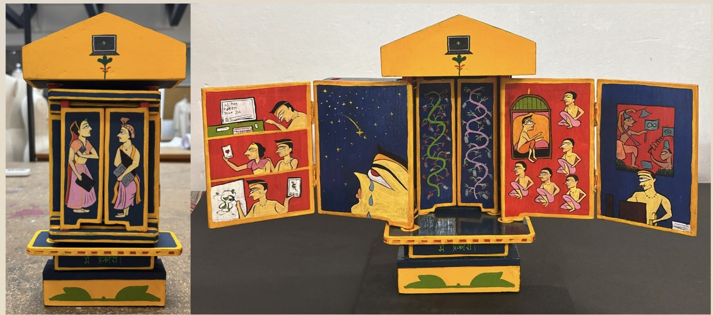
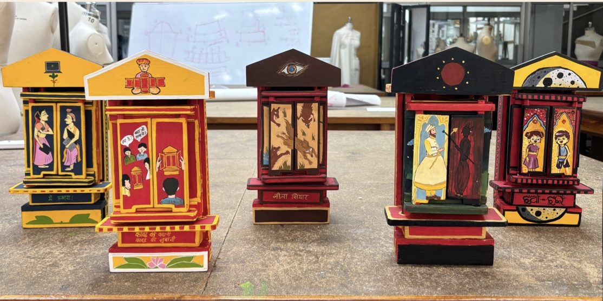
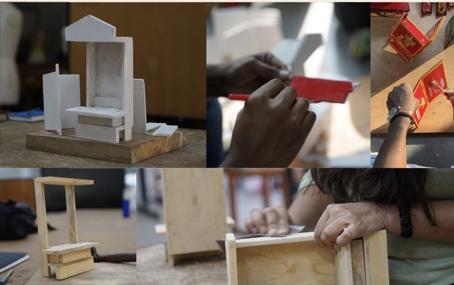
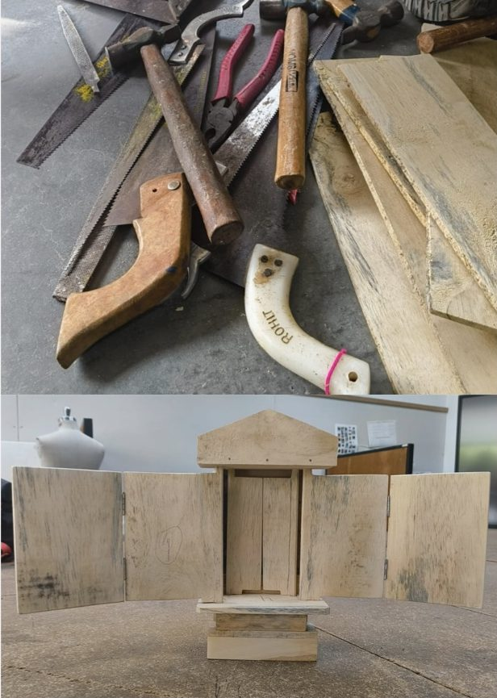
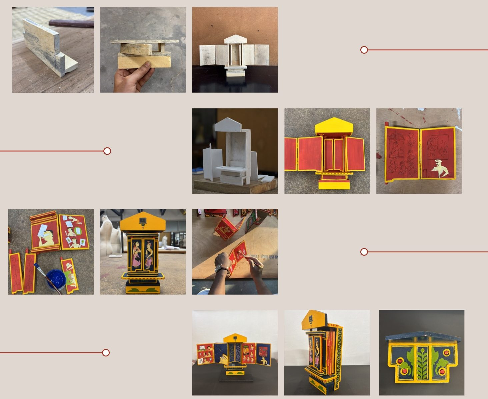
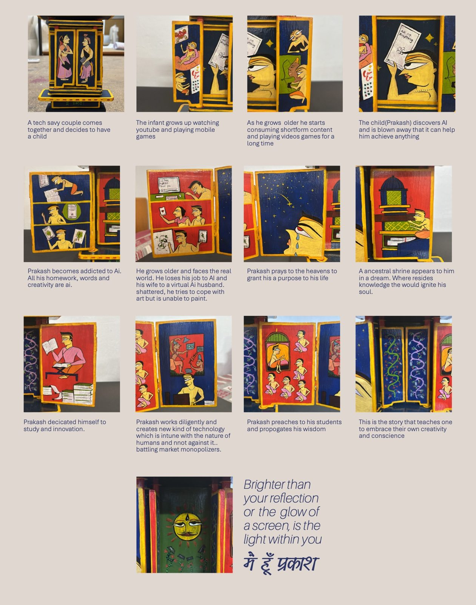
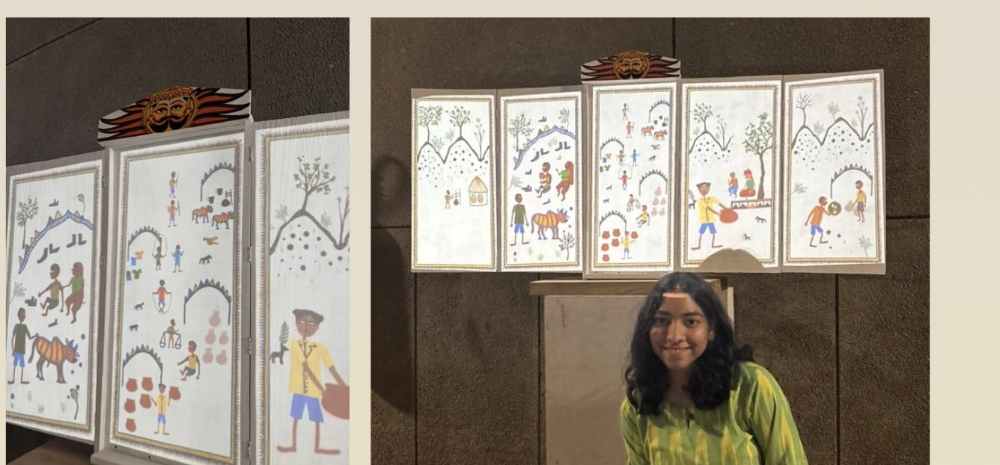
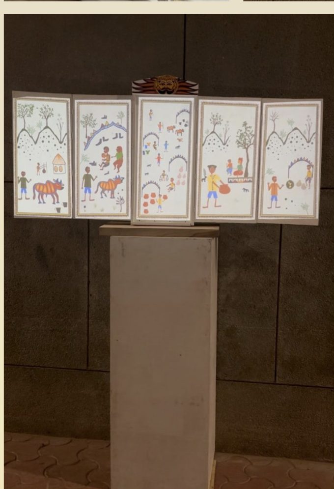
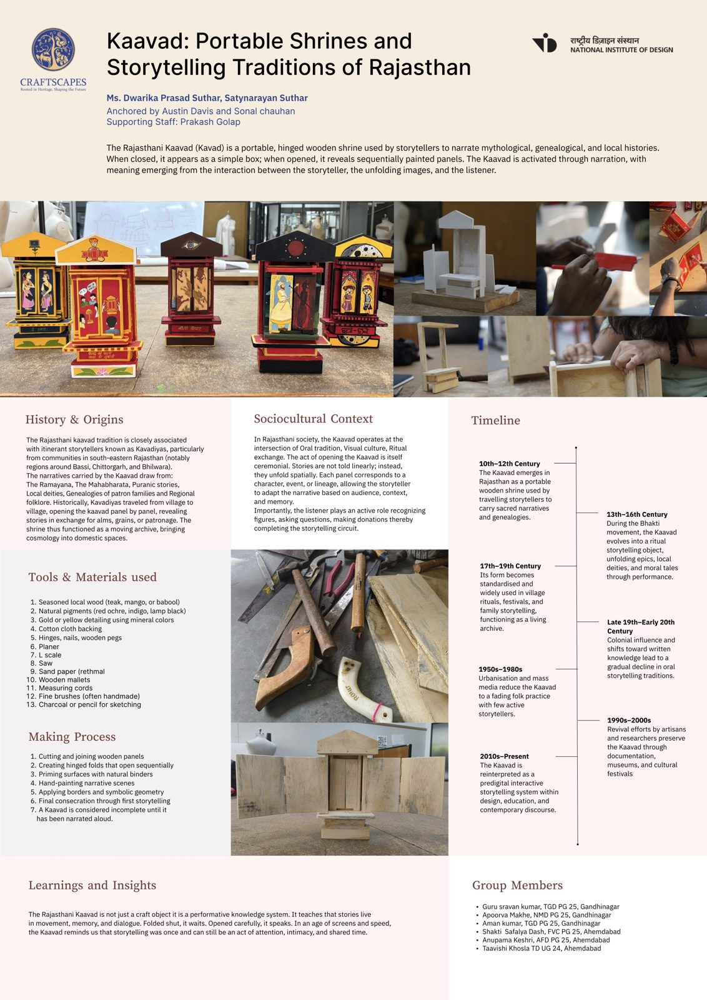

Craftscapes · NID
Kaavad
Portable shrines & storytelling traditions of Rajasthan, and Mai Hun Prakash, a story for a kaavad of my own.

A shrine that tells stories
The Rajasthani kaavad is a portable, hinged wooden shrine. Closed, it looks like a simple box; opened, it reveals painted panels one after another. It comes alive through narration, with meaning emerging between the storyteller, the unfolding images and the listener.
Itinerant storytellers called Kavadiyas, from south-eastern Rajasthan around Bassi, Chittorgarh and Bhilwara, carried kaavads from village to village: the Ramayana, the Mahabharata, Puranic stories, local deities and the genealogies of patron families. Stories aren’t told in a line; they unfold in space, panel by panel, and the listener completes the circuit by recognising figures, asking questions and giving.

Wood, pigment and hinges
Seasoned local wood (teak, mango or babool), natural pigments like red ochre, indigo and lamp black, gold or yellow mineral detailing, cotton cloth backing, hinges, nails and wooden pegs, shaped with planes, saws, mallets and fine handmade brushes.
Panels are cut and joined, hinged to open in sequence, primed with natural binders, hand-painted, and finished with borders and symbolic geometry.
A kaavad is considered incomplete until it has been narrated aloud.



Mai Hun Prakash · “I am the Light”
Prakash is a child born into an era of unsupervised technology and omnipresent AI. Screens become his companions, teachers and mirrors, and slowly replace intuition, intimacy and inner silence. He hands his love, ambition and purpose to machines until AI becomes his confidant, his guide and eventually his god. Life becomes efficient, optimised and hollow.
In his later years a longing surfaces. He looks up to the sky and inward to the memory of his ancestors, and the stars lead him to an ancient temple where knowledge is carried in stone, breath, rhythm and silence. Reborn through understanding, he returns, not to reject technology, but to rebuild it around human values.
The kaavad mirrors this. As it opens, it reveals not spectacle but insight, not brightness but illumination.
Brighter than your reflection or the glow of a screen, is the light within you.

The kaavad as a way to learn
With the group, we reinterpreted the kaavad as an interactive learning medium that weaves together storytelling, craft and digital technology, so learning can be immersive, visual and playful instead of passive.
It’s a conscious effort to bring cultural values into contemporary education: foregrounding indigenous narratives and ways of passing on knowledge, and questioning the colonial frameworks that shaped modern schooling. The kaavad becomes not an artefact of the past but a living tool for culturally grounded learning.


Folded shut, it waits
The kaavad is not just a craft object; it is a performative knowledge system. Folded shut, it waits. Opened carefully, it speaks.
In an age of screens and speed, the kaavad is a reminder that storytelling was, and can still be, an act of attention, intimacy and shared time.
